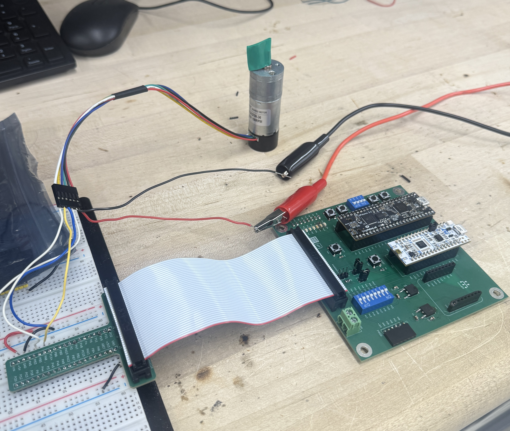
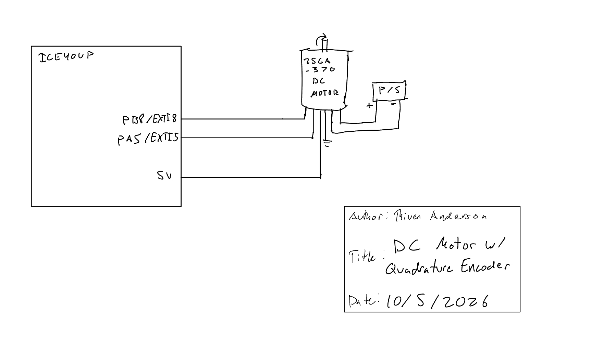

flowchart TD
A[Start] --> B[encoderInit]
B --> C[Configure PA8 and PB5]
C --> D[Configure EXTI on both edges]
D --> E[Start free-running TIM6]
E --> F[Main loop]
F --> G[Read signed encoder count]
G --> H[Calculate velocity from count change and TIM6]
H --> I[Print direction and rev/s]
I --> J[TIM7 250 ms delay]
J --> F
K[Encoder A or B edge] --> L[EXTI9_5_IRQHandler]
L --> M[Read current A/B state]
M --> N[Compare previous and current state]
N --> O[Increment or decrement encoder_count]
O --> P[Save current state]
O -. shared encoder_count .-> G
Lab 5: Interrupts
lab reports
Interrupt-driven quadrature encoder measurement of motor direction and velocity using the STM32L432KC.
Introduction
Lab 5 uses interrupts on the STM32L432KC to measure the direction and angular velocity of a DC motor from its quadrature encoder. Both edges of both encoder channels are used to update a signed encoder count. TIM6 provides the time base for converting changes in count into velocity, while TIM7 controls how often the result is printed.
The complete source code is available in the Lab 5 GitHub repository. The design follows the current Lab 5 specifications.
Hardware
The encoder channels are connected to PA8 and PB5. Both pins are listed as 5 V tolerant in the STM32L432KC datasheet, allowing them to safely receive the 5 V encoder outputs.
| Signal | MCU pin |
|---|---|
| Encoder A | PA8 |
| Encoder B | PB5 |
| Encoder power | 5 V |
| Encoder ground | GND |
The calculations below use the 408 pulses/output-revolution value for the -34 motor.

Software and Microcontroller Design
Interrupt-Based Quadrature Decoder
PA8 and PB5 are configured as GPIO inputs and routed to EXTI8 and EXTI5. Interrupts are enabled on both rising and falling edges of both channels. The shared EXTI9_5_IRQHandler() reads the current two-bit encoder state and compares it with the previous state.
One valid state sequence increments the signed count,
00 -> 10 -> 11 -> 01 -> 00while the reverse sequence decrements it,
00 -> 01 -> 11 -> 10 -> 00For the final wiring, positive velocity corresponds to clockwise rotation and negative velocity corresponds to counterclockwise rotation.
Quadrature count update
if ((previous_state == 0b00 && current_state == 0b10) ||
(previous_state == 0b10 && current_state == 0b11) ||
(previous_state == 0b11 && current_state == 0b01) ||
(previous_state == 0b01 && current_state == 0b00)) {
encoder_count++;
}
else if ((previous_state == 0b00 && current_state == 0b01) ||
(previous_state == 0b01 && current_state == 0b11) ||
(previous_state == 0b11 && current_state == 0b10) ||
(previous_state == 0b10 && current_state == 0b00)) {
encoder_count--;
}Velocity Calculation
The encoder produces 12 pulses per motor revolution. For a 34:1 gearbox this gives
\[ 12(34)=408 \]
pulses per output-shaft revolution. Because both edges of both encoder channels are used, the software count is
\[ N_{rev}=4(408)=1632\text{ counts/rev}. \]
TIM6 is configured as a free-running timer with a 1 ms count period. Velocity is calculated from the change in signed encoder count:
\[ v=\frac{\Delta N}{1632\left(\Delta t_{ms}/1000\right)} \]
where the sign of \(v\) gives direction.
The function allows an update after at least 100 ms. In the current main loop it is called once every 250 ms, so the displayed velocity updates at approximately 4 Hz, above the required 1 Hz. At a 250 ms measurement interval, one encoder count corresponds to approximately
\[ \frac{1}{1632(0.25)} \approx 0.00245\text{ rev/s}. \]
Program Flow
Testing and Results
A manual one-revolution test produced approximately 1672 signed counts. The theoretical value is 1632 counts/rev, giving a difference of approximately
\[ \frac{|1672-1632|}{1632}(100)\approx2.45\%. \]
The difference is consistent with the limited accuracy of manually marking and rotating exactly one revolution.
At 12 V, the motor produced a stable measured speed of approximately 2.9 rev/s. At the lowest tested voltage where the motor continued to rotate, approximately 0.4 V, the measured speed remained nonzero at approximately 0.05–0.07 rev/s.
Interrupts Compared with Polling
At the maximum tested speed of approximately 2.9 rev/s at 12 V, the encoder produces
\[ 2.9(1632)=4733\text{ encoder edges/s}. \]
This corresponds to one encoder transition approximately every
\[ \frac{1}{4733}\approx211\ \mu\text{s}. \]
A polling implementation would therefore need to read both encoder channels faster than about 4.7 kHz, and preferably substantially faster, to avoid missing transitions. This polling would need to run continuously even when the motor is stopped.
The interrupt-based implementation instead allows the main loop to run independently while EXTI responds whenever an encoder edge occurs. At 2.9 rev/s, the MCU handles approximately 4733 encoder interrupts per second while still allowing the main loop to update and print velocity every 250 ms. This makes interrupts better suited for detecting short encoder transitions without requiring the main loop to continuously poll the GPIO pins.
Schematic
The schematic shows only the off-board motor/encoder connections, including 5 V, ground, encoder A to PA8, encoder B to PB5, and the motor supply connections. Components already present on the E155 development board should not be redrawn; see the E155 development board schematic.

Requirements Verification
The system uses EXTI interrupts rather than polling to detect encoder transitions and uses both edges of both channels. Direction is determined from the quadrature state sequence, and velocity is displayed in rev/s at approximately 4 Hz. PA8 and PB5 are 5 V-tolerant inputs. Testing showed stable operation around 2.9–3.0 rev/s at 12 V and a nonzero reading around 0.05–0.07 rev/s at the lowest tested motor speed.
AI Prototype and Reflection
For the AI prototype, I gave Claude the provided prompt asking it to generate interrupt handlers for a quadrature encoder on the STM32L432KC. I then provided my existing encoder interface so that its encoder.c and encoder.h could replace my implementation without changing main.c.
Claude produced a more complex implementation than my original design. It used both edges of both encoder channels, a quadrature transition lookup table, TIM2 as a 1 MHz timestamp timer, and an eight-sample buffer to calculate velocity. It also included a timeout to report zero velocity when no encoder edges were detected.
I placed the generated code on a separate ai_prototype branch and tested it as a replacement for my working encoder driver. The code compiled, but I was not able to get reliable encoder measurements from it on the hardware. I attempted to debug the implementation, but did not get it functioning before returning to my original design.
My implementation was simpler: it used explicit quadrature-state comparisons to update a signed count and TIM6 to calculate velocity from the change in count over time. This version was easier for me to trace and debug and successfully measured both direction and velocity over the tested motor-speed range.
The prototype showed that the LLM could generate a reasonable interrupt-based architecture, but the generated code was significantly more complex than necessary for this lab. Even when the code compiled, hardware testing was still required to determine whether the peripheral configuration and encoder behavior were correct.
AI-generated quadrature encoder prototype
// Quadrature transition lookup table
static const int8_t transition[16] = {
0, +1, -1, 0,
-1, 0, 0, +1,
+1, 0, 0, -1,
0, -1, +1, 0
};
static void processEdge(void) {
uint32_t now = TIM2->CNT;
uint8_t a = (GPIOB->IDR >> 5) & 0x1;
uint8_t b = (GPIOA->IDR >> 8) & 0x1;
uint8_t current_state = (a << 1) | b;
int8_t step =
transition[(previous_state << 2) | current_state];
previous_state = current_state;
if (step != 0) {
encoder_count += step;
samples[head].count = encoder_count;
samples[head].timestamp = now;
head = (head + 1) % SAMPLE_COUNT;
}
}
float encoderGetVelocity(void) {
EncoderSample newest = samples[head];
EncoderSample oldest = samples[(head + 1) % SAMPLE_COUNT];
int32_t delta_count = newest.count - oldest.count;
uint32_t delta_time = newest.timestamp - oldest.timestamp;
if (delta_time == 0) {
return 0.0f;
}
return ((float)delta_count * 1000000.0f) /
(ENCODER_COUNTS_PER_REV * (float)delta_time);
}
void EXTI9_5_IRQHandler(void) {
uint32_t pending = EXTI->PR1 &
(EXTI_PR1_PIF5 | EXTI_PR1_PIF8);
EXTI->PR1 = pending;
if (pending) {
processEdge();
}
}Time Spent
Total time spent on Lab 5: 15